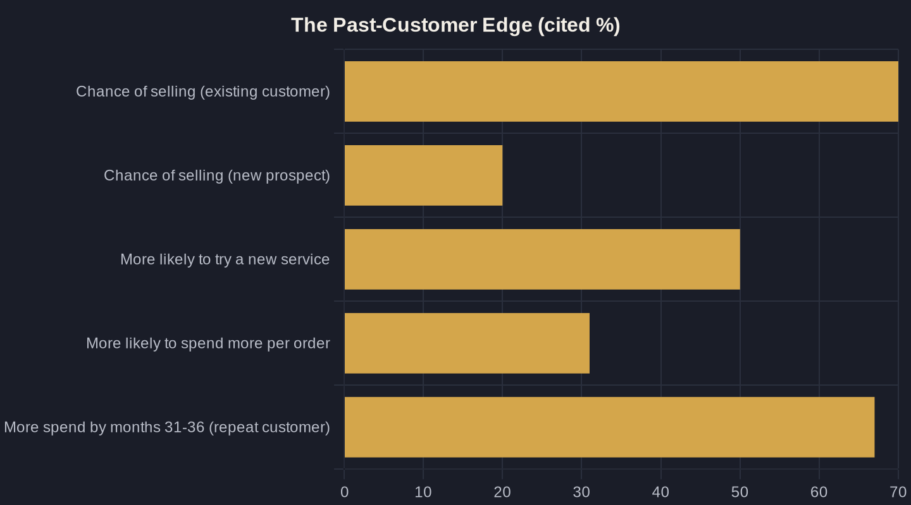

Database Reactivation: Mine More Jobs From Past Customers
The warmest pipeline you own is sitting in your CRM right now. Here's how to work it before you buy another cold lead.
Key takeaways
- A customer reactivation campaign works a database you already paid to build — acquiring a new customer costs 5 to 25 times more than selling to an existing one.
- Past customers close at 60-70% versus 5-20% for cold prospects, and they buy more: 50% more likely to try a new service, 31% higher order value.
- Lifting retention just 5% can raise profit 25-95% — reactivation is a profit lever, not only a revenue one.
- Sequence the channels: email (one of the highest-ROI channels) to surface intent at near-zero cost, then a phone call to close high-ticket jobs.
- Automate the triggers so the campaign runs every month without anyone remembering to do it — that's where most reactivation revenue is lost.
Your Cheapest Pipeline Is the List You Already Own
Most local service owners pour the entire marketing budget into one job: finding strangers. New ads, new SEO, new lead forms — all aimed at people who have never heard of you. Meanwhile, the warmest pipeline you own is sitting untouched in your CRM, your invoicing software, and your old appointment book.
A customer reactivation campaign is the deliberate work of mining that database — past customers who already paid you once — and giving them an honest reason to come back. It is the closest thing to free money in local marketing, because the hard part, earning trust the first time, is already done. By contrast, acquiring a brand-new customer runs five to twenty-five times more expensive than retaining one you already have.
The math only gets better from there. Research from Bain & Company found that increasing retention by just 5% lifts profit by 25% to 95%. The 95% is the ceiling for your best cohorts, not a promise — but even the 25% floor beats the return on most paid acquisition. If you are spending to find new customers while ignoring the ones who already wrote you a check, you are buying the expensive lead and skipping the cheap one.
Why Past Customers Close at Multiples of Cold Leads
Cold leads are skeptical by default. They are comparing you to three competitors, reading reviews, and hunting for a reason to say no. A past customer starts from the opposite position — they already know your work, your crew, and your price. That trust is the single most expensive thing to manufacture, and you have already paid for it.
The numbers bear it out. There is a 60-70% chance of selling to an existing customer, versus 5-20% for a new prospect. That is not a rounding difference — a reactivation list closes at three to ten times the rate of cold traffic. Run the same offer to both audiences and the past-customer list wins every time.
There is an upsell angle too. Existing customers are 50% more likely to try a new service and 31% more likely to spend more per order than new customers. The plumbing customer who called for a water heater two years ago is your best prospect for a whole-home repipe — if you remember to ask. The roofing customer you patched last spring is your easiest sell on a full replacement. The intent is there; reactivation is just the act of surfacing it.
The Owner's Math on a Reactivation Campaign
Run the Owner's Math — trace what one dollar of marketing returns from impression to revenue — and reactivation almost always wins on payback. You are not buying clicks. You are sending an email or making a call to someone whose contact info you already have, so the cost per booked job is a fraction of what cold acquisition costs. The denominator in your ROAS (return on ad spend) math is close to zero.
Past customers also grow more valuable the longer you keep them active. In one Bain & Company study of apparel shoppers, the average repeat customer spent 67% more in months 31-36 of the relationship than in the first six months. The relationship compounds — a reactivated customer is worth more on their third and fourth job than their first, which means every win-back is really a multi-year annuity, not a one-off ticket.
Here is the side-by-side that should frame how you budget a customer reactivation campaign against your next cold-lead push:
Build the List, Then Pick the Trigger
A customer reactivation campaign starts with a clean list. Pull every past customer from your CRM, invoicing tool, or scheduling software, and segment by the last job and the last date of service. A roofer's eighteen-months-since-inspection segment and a med spa's lapsed-membership segment need completely different messages, and lumping them together kills your response rate.
Then pick a trigger — a specific, honest reason to reach out now. The strongest triggers are tied to time or maintenance, because the reason is real and the customer knows it: an annual HVAC tune-up, a six-month dental cleaning, a seasonal gutter clean, a yearly pest inspection. When the reason writes itself, the message does too, and you never have to manufacture fake urgency.
- Lapsed-time triggers — "It has been a year since we serviced your system."
- Maintenance triggers — seasonal or warranty-based reminders the customer expects.
- Win-back offers — a modest, specific incentive for customers who went quiet 12+ months ago.
- Cross-sell triggers — a related service they have not tried yet.
| Metric | New / Cold Lead | Past Customer (Reactivation) |
|---|---|---|
| Cost to acquire | 5-25x higher | Already paid for |
| Probability of selling | 5-20% | 60-70% |
| Likely to try a new service | Baseline | +50% |
| Average order value | Baseline | +31% |
| Profit impact of a 5% retention lift | — | +25-95% |

Use Two Channels: Email to Reach, Phone to Close
Email is the workhorse of reactivation because the economics are hard to beat. Per Litmus, 30% of companies earn $36 to $50 for every $1 spent on email, and another 35% earn $10 to $36 — returns no other digital channel matches consistently. For a list you already own, the send cost is close to nothing, so almost every booked job drops straight to the bottom line.
But email alone leaves money on the table for high-ticket local jobs. 68% of consumers say calling a business is the most attractive way to communicate, and 30% feel most comfortable making high-stakes purchases over the phone. A $9,000 roof or a $14,000 HVAC system rarely closes from an email click alone — the customer wants to talk to a human before they spend that kind of money.
So sequence the two. Use email and text to surface intent at near-zero cost, then put a human on the phone to close the customers who open, click, or reply. The email finds the warm ones; the call books them. Skip either half and you either miss the reach or miss the close.
Automate the Campaign So It Actually Runs
The reason most reactivation lists rot is simple: nobody has time to run the campaign by hand every month. This is exactly the kind of repetitive, rules-based work that should run on automation — the backbone of AI marketing and automation for local service businesses. Set the triggers once, and the system sends the email, fires the text, and queues the call list while you run the trucks.
Automation also closes the gaps that quietly kill reactivation revenue. When a reactivated customer calls back, an AI receptionist that answers every lead call makes sure the job does not slip because the phone rang during a service appointment. And if a call does get missed, missed-call text-back catches it within seconds instead of handing the customer to the competitor who picks up first.
The same system keeps the relationship warm between campaigns. Automated review requests and replies turn every reactivated job into fresh proof — which makes your next cold lead easier to close and your next reactivation easier still. The flywheel only spins if it runs without you remembering to push it.
Where to Start This Week
You do not need new software or a big budget to start. Export your customer list, sort by last service date, and find the segment that is most obviously due — the one where the reason to reach out is undeniable. That is your first customer reactivation campaign, and you can have it built before the end of the week.
Write one honest email and one short call script. Send to a few hundred past customers, track the booked jobs against near-zero cost, and you will have a real payback number that makes the case for automating the rest. The candor is the product here — no gimmicks, no fake countdown timers, just a real reason to come back.
If you want help mapping your database into segments and running the Owner's Math on what reactivation is actually worth for your business, that is the work I do with owners every week. Book a call, or join the newsletter for the playbooks I send owners who are tired of buying leads they already paid for once.
Sources
- Harvard Business Review — "The Value of Keeping the Right Customers" (Amy Gallo, citing Bain & Company) (2014)
- HubSpot — Customer Retention Statistics (citing Marketing Metrics) (2024)
- Business.com — "Returning Customers Spend 67% More Than New Customers" (citing Bain & Company) (2023)
- Litmus — "The ROI of Email Marketing" (Infographic) (2024)
- Invoca / PR Newswire — "Invoca Report Finds Most Consumers Want to Call Businesses" (2021)
Want this run on your numbers?
Book a call and we will run the Owner's Math on your business — clear numbers, a straight plan, no pitch. Or read the free Playbook first.